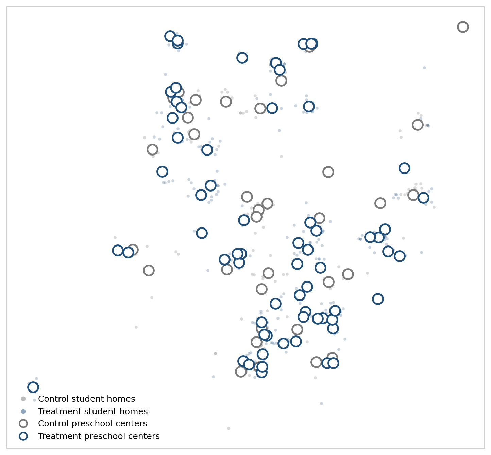
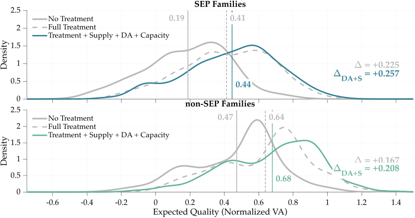

Explore the places families live and the schools they choose.
6 markets / Chile
Where would this school attract families?
Each area conditions on residence and family characteristics. Colors show the chance of choosing the same school, with its full market menu held fixed.
Choose a school or residential area
Records per 2 km area12–45–910–2425+
Approximate home areasSampled schools12 Zoom to separate schools
Home areas use approximately 2 km cells. These are not school-choice boundaries.

Santiago experiment, as shown in the paper. This figure covers 670 students, including 448 treated. Hollow circles are preschool-group centroids calculated from homes, not preschool addresses. This sample differs from the 658 Santiago records in the coordinate export. Source: online appendix ↗
What these maps can tell us
The interactive map uses the archived CorrectedD coordinate export: 800 records from six markets, compared with 815 in the estimation sample. It shows approximate origin areas and schools chosen in this subset, not every school available in each market. Market codes are retained where a verified name is unavailable; no market boundaries are inferred from points.
The archived export cycles household coordinates within market–node groups. That preserves a geographic overview but does not establish each row’s actual household location. Treatment counts are therefore shown at market level only. Residential cells carry no treatment labels or individual identifiers. The original Santiago figure provides the paper’s treatment/control spatial comparison.
A valid family comparison requires a verified household link, the complete 2011 school menu, and the fitted model’s untreated and treated choice probabilities. Displayed locations are approximate; the model’s original driving distances must be used in estimation. School conditions stay fixed in this family-level exercise.
Set a policy. Follow families’ choices, the competition for seats, and schools’ response.
From the paper’s model
Model-projected change +0.166 SD
100% TAKE-UP · ALL FAMILIES
Information, at scale
School quality · SD
Change from no intervention+0.166 SDReported treatment effect
Expected school quality0.7230.558 without the intervention
Follow the effect through the market
Expected quality, in SD
No intervention Policy scenario
↳
Schools’ response changes the story.
EXPERIMENTAL SAMPLE · DEMAND RESPONSE
Who gains as information reaches more families?
815 families · fixed schools
Change take-up or target a family group and watch the distribution move. These comparisons use the saved model predictions for the experiment’s families, holding school quality and prices fixed, without seat constraints.
Loading the experimental distributions…
Information policy
No information
→
Selected policy
Change in mean
No informationSelected policy
Compare the lower tail, median, and upper tail
What changes when take-up changes?
Each family has two model-predicted expected-VA outcomes: one with information, one without. At 50% randomized take-up, each outcome receives half that family’s weight. Targeting changes which group can receive information. Each family’s total weight remains one.
The curves average over possible treatment assignments. They do not interpolate each family’s outcome between the two states, represent one realized assignment, or rerun the equilibrium model. The experimental sample differs from the population used in the policy results below.
Density smoothing is fixed across policies within each displayed group. Cumulative shares are exact at the displayed thresholds; percentiles use the weighted empirical distribution. These are new take-up comparisons from the paper’s saved demand outcomes, not additional published equilibrium results. Data and methods ↗
FOLLOW THE SELECTED POLICY
From the average to the distribution
Loading distribution…
No intervention0.558
→
Schools respond0.723
Change in mean+0.166 SD
Mean expected school value added
No interventionSelected policy
Compare the lower tail, median, and upper tail
How to interpret the comparison
The selected policy, family group, and model stage follow the controls above. Each family’s outcome is its expected school value added, averaging over the model’s school choices or assignments. The distribution describes differences in these expected outcomes across families.
Population curves appear only for validated simulation exports. Their means use the same families and weights as the policy results. Density curves use consistent smoothing and axes; the cumulative view reports the share at or below each VA threshold. The experimental-sample figures below describe a different population.
The paper’s model-predicted distributions across experiment-sample families, evaluated in their 2011 school-choice environments.
Experimental sample 815 families
These original figures describe 815 experimental families at full take-up. They provide a separate reference for the population policy comparison above.
Full information with capacity constraints and school responses
Scroll across the figure to inspect both curves and annotations.

The figure could not be displayed. Use “Open original figure” to read it.
Gray solid: no treatment. Gray dashed: full treatment with free choice and fixed quality. Colored solid: capacity-constrained assignment and private-school quality responses.Sample, interpretation, and sources
Each observation is a family’s model-predicted expected school value added, averaging over its possible school outcomes. Each family receives equal weight within its SEP group. These are smoothed density estimates; the vertical axis is density, and vertical lines mark group means. The horizontal axis is normalized school value added in standard deviations, not a prediction of the child’s test score.
The treatment comparisons apply information to eligible families at full take-up under the paper’s restricted treatment specification. The school-response figure holds public-school quality, tuition, and capacities fixed. The figures do not report distributions for alternative take-up rates, targeted treatment, or cost sensitivities. Mean labels are rounded to two decimals; printed treatment effects use unrounded means.
The chart tracks the quality of schools children attend. It does not predict their test scores. Policies are compared with the same no-intervention baseline.
Source: September 2026 manuscript, capacity counterfactual and robustness tables. Small differences between reported effects and changes in displayed quality levels reflect rounding. Cost sensitivities increase private schools’ unit cost of quality, keeping fixed per-student costs unchanged and retaining original costs in the no-policy baseline. They depend on the normalization of the quality index and are not estimated wage responses. Scenario comparisons hold all other assumptions at the paper’s baseline; they are not a continuous policy response surface.
Who took part, what families were shown, and how the study measured the effects on school choice.
EXPERIMENTAL EVIDENCE AND STRUCTURAL ANALYSIS
From Causal Effects on Individual Behavior to the Equilibrium Effects of Policy
The randomized experiment estimates changes in families’ school choices. The structural model uses these estimates to evaluate policy effects under capacity constraints and schools’ quality responses.
THE AUTHORS
Researchers
Authors of Approximating the Equilibrium Effects of Informed School Choice.
Professor Allende
Assistant Professor of Economics
Stanford Graduate School of Business
Professor Allende is an applied microeconomist who studies how public policy shapes markets where public and private providers compete. Her work focuses on education and draws on industrial organization to examine the effects of subsidies, regulation, and the frictions that influence families’ decisions.
She combines administrative records, surveys, and randomized trials to study policy effects in equilibrium. Her broader interests include market design and development economics, with research also spanning health care and transportation. She is a Center Fellow at the Stanford Institute for Economic Policy Research.
Professor Gallego studies economic development, with a particular interest in education, information, and the institutions that shape economic outcomes. His work uses empirical methods to evaluate interventions and understand how households and policymakers respond to new information.
His research includes school choice and competition in Chile, preschool instruction in Peru, and the effects of information about educational outcomes on voters. His broader interests span political economy, economic history, and labor economics. He holds a PhD in Economics from the Massachusetts Institute of Technology.
Professor Neilson is an applied microeconomist who studies education markets and policies that expand opportunities to develop human capital. He draws on industrial organization, labor economics, and development economics to examine how policies affect students, families, and education providers.
He works with governments across Latin America to design, evaluate, and implement education policies using data and technology. He founded ConsiliumBots to support this work and holds a joint appointment in Yale’s Department of Economics and Jackson School of Global Affairs. He earned his PhD in Economics at Yale.